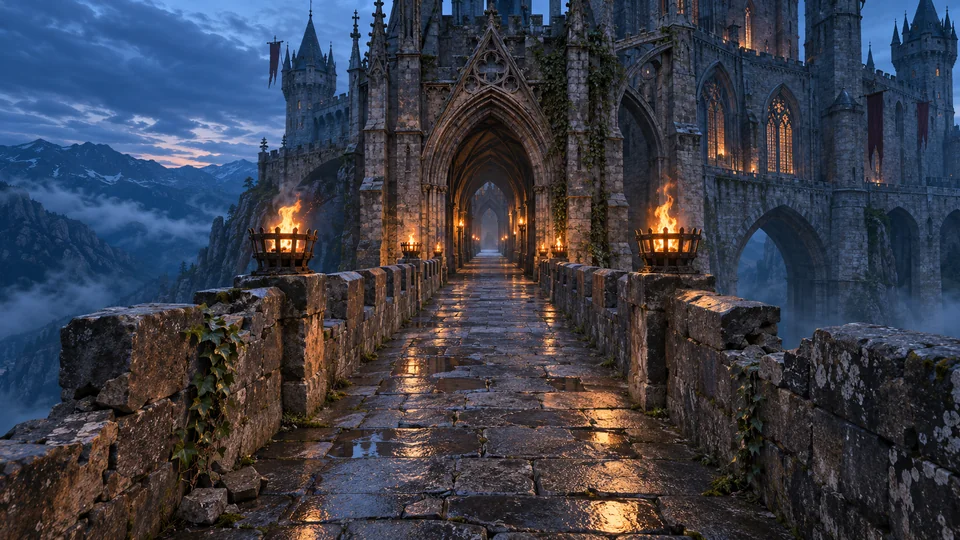

埃及 · 太阳神的回廊
厚重沙岩柱廊、雕刻、金字塔和沙丘，搭配温暖斜光与尘埃。
AI4FUN ORIGINALS · PRODUCTION NOTES
遗迹疾行 RELIC RUN 是一个第一人称浏览器跑酷小品：五个遗迹主题，每关 720 米。用户提出创意与目标，AI 完成主要自定义制作。
点击开玩五个场景从一开始全部开放。它们采用相同的操作规则，各自拥有建筑轮廓、材质、光照、植被和环境氛围。场景是艺术化虚构，不是文物、古迹或历史地理的精确复原。
厚重沙岩柱廊、雕刻、金字塔和沙丘，搭配温暖斜光与尘埃。
层叠石塔、盘根古树、青苔石道与湿润雨林，采用较柔和的绿调天光。
阶梯金字塔、石碑与热带植被，以翡翠装饰和暖色天空形成对比。
青砖城垛、可穿过的敌楼、蜿蜒远山与晨雾，强调高处开阔的视野。

哥特拱廊、石墙、塔楼与火盆，在冷色夜光中加入温暖火焰。
角色会自动向前奔跑。金色遗物标出一条可以通行的路线；你也可以走其他路线，用动作越过障碍。每次有效碰撞消耗一次容错，三次碰撞后结束；抵达 720 米则完成挑战。
| 操作 | 电脑 | 手机 |
|---|---|---|
| 左右变道 | A / D 或 ← / → | 左右滑动或方向按钮 |
| 跳跃 | 空格 / W / ↑ | 向上滑动或“跳跃” |
| 滑铲 | S / ↓ | 向下滑动或“滑铲” |
| 暂停 / 继续 | Esc / P 或暂停按钮 | 右上角暂停按钮 |
| 重新挑战 | R 或结果页按钮 | 暂停或结果页按钮 |
低石障碍可以跳过或变道避开，横梁可以滑铲通过或变道，裂隙可以跳过或变道。每次重开会生成新的路线。得分 = 行进米数 × 10 + 遗物数量 × 100，最高分按场景保存在当前浏览器。
因此，这是一件主要由 AI 完成自定义制作、由人类提出目标和 Prompt 的作品。我们不声称每一行依赖代码都由本次 AI 编写，也不把“使用 AI 工具”自动等同于“整件作品全部由 AI 制作”。
这个版本将有限规模集中在五条短路线，使用有粗糙度与凹凸细节的材质、动态阴影、色调映射、距离雾、尘埃、石材与建筑细节来营造电影感。它是轻量实时浏览器作品，不宣称达到商业 AAA 游戏的照片级真实程度，也没有路径追踪、扫描文物模型或大型开放世界。
推荐使用支持 WebGL 2 的现代浏览器并开启硬件加速，以体验完整三维场景。无法创建 WebGL 上下文时，游戏会自动进入 Canvas 兼容画面，保留五个主题、变道、跳跃、滑铲、碰撞、遗物与得分规则；界面会显示“兼容画面”。这种模式简化了建筑与光照表现。高画质、均衡与流畅三个选项用于三维模式，调整内部渲染分辨率和阴影。横屏有更宽的视野；容易晕动时可关闭“镜头起伏”。不同设备的帧率和细节表现会不同。
实际加载的五张场景封面与一张石材贴图采用 WebP，共约 1.12 MiB。原始 PNG 与生成提示词一同保留在源码中；压缩只改变图片尺寸与编码，不改变场景内容。
自动化检查覆盖玩法状态、路线可达性以及本地模块、图片、样式和页面链接是否齐全。其中资源检查包含仅在 WebGL 不可用时加载的兼容渲染器，避免遗漏备用模块。这些检查不评价三维光照、遮挡效果或真实设备帧率。完整 WebGL 画面需要在支持硬件加速的浏览器中分别检查，兼容画面能运行也不能替代这项验证。
2026-11-20，云端 Chrome：已检查兼容画面的五个场景切换、开跑、倒计时中打开设置、暂停与恢复、键盘和屏幕按钮、返回选关；窄屏检查覆盖 320×480、320×568 和 844×320。30 项自动化测试覆盖目录、跑酷规则与资源完整性，另有 500 组路线及 15 种场景/画质组合的程序检查。
该测试浏览器禁用 WebGL，因此以上实机画面属于 Canvas 兼容模式。完整三维材质、阴影和设备帧率仍需要在启用硬件加速的浏览器中检查。开发交接与后续验收清单。
玩法测试覆盖路线可复现性、换道边界、跳跃与滑铲、真实位置碰撞、无敌时间、暂停恢复、结束与重新挑战，以及五个场景的安全路线可达性。本页提供源码与玩法测试入口；在线版本以游戏入口实际展示的内容为准。